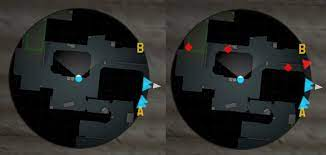

Jogadores profissionais
S1mple
-
Nome:Oleksandr Olehovych Kostyliev
-
Idade:24
-
Nacionalidade:Ucrânia
- Time:Natus Vincere
S1mple é um dos melhores jogadores de cs:go do mundo, com diversos títulos ao longo de sua carreira, incluindo o mundial de 2021(Pgl Major Stockholm).
Dev1ce

-
Nome:Nicolai Hvilshøj Reedtz
-
Idade:26
-
Nacionalidade:Dinamarca
-
Time:Ninjas in pijamas(NIP)
Dev1ce é um dos maiores vencedores que ja teve no cenario competitivo, ganhou diversos campeonatos pela Astralis, que foi por esse time que ele consquistou 4 mundiais de csgo.
Imagens do jogo
-
/i.s3.glbimg.com/v1/AUTH_08fbf48bc0524877943fe86e43087e7a/internal_photos/bs/2020/b/S/ojx0N3T0mjjDMRly0iBQ/counter-strike-global-offensive-source-2-engine-valve.jpg)
Jogador em mapa de missão.
-
/i.s3.glbimg.com/v1/AUTH_bc8228b6673f488aa253bbcb03c80ec5/internal_photos/bs/2020/8/b/vkqAdIQB6PQDdU6KgWbQ/cs-go-3.jpg)
Imagem de apresentação do novo mapa.
-
/i.s3.glbimg.com/v1/AUTH_08fbf48bc0524877943fe86e43087e7a/internal_photos/bs/2019/Q/m/8DandBQ7qX25NmPkjBCQ/csgo-seguranca-capa.jpg)
Três jogadores mirando meio da dust 2.
Dicas
-
Treinar posicionamente de mira, spray, controle de sensibilidade, etc. Um bom mapa para esse treino é o Aimbotz.
Clique na imagem para ser redirecionado ao site do "Aimbotz"(20:58 do 30/12/2021).
-
Treinar a movimentação como bunnyhop, surf, pulos em caixas, subir em escadas. etc. Um ótimo mapa para treinar movimentação "Movement Chellenge - #MovementChellenge"
Clique na imagem para ser redirecionado ao site do "Movement Challenge".(21:06 do 31/12/2021)
-
Sempre ficar de olho no radar para ter informações tanto do time inimigo como do seu time, pois as vezes seus companheiros podem esquecer de passar informações, então mantenha-se atento ao radar. 
Imagem radar do CS:GO.(21:14 de 30/12/2021)
- Mantenha um comunicação limpa sem estressar a si e seu time, pois pode acabar causando conflitos entre o próprio time, e os jogadores podem perder a vontade de jogar, portanto não comente coisas desnecessarias no chat de voz da partida, apenas informações uteis, e sempre mantendo a calma, e isso sera muito bem recompensado. (21:18 do 31/12/2021)